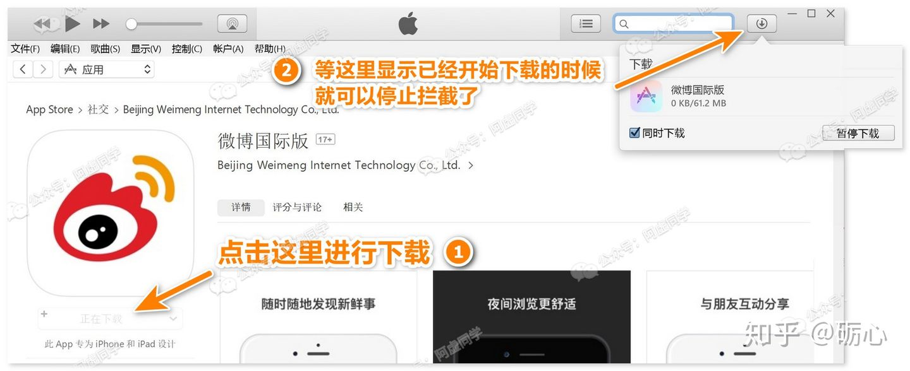
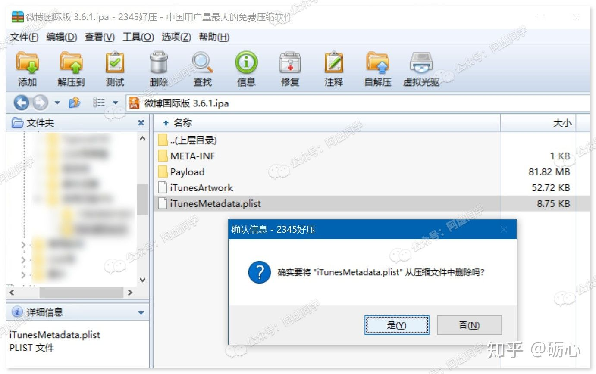

从App store下载App的不同版本ipa文件----很多东西也不是越新越好，比如APP——在 iPhone 上尤其如此
比如可以查看 iOS 每日限免应用的Price Tag在 2.3.1版时还完全没有内购，所有高级功能都能免费解锁！
这个APP阿虚原来有推荐过，不过现在很可惜已经下架了
优秀的图片标注软件Annotable，在1.11.2版本的时候，所有高级功能都还免费提供！
要知道，这之后的版本换个颜色、放大镜、文字高亮等等功能都需要才能付费解锁
又比如比较知名的OCR文字识别软件：白描在2.1.6版时，还没有OCR识别的每日5次的限制，那时还可以一直用
除了可以通过换用旧版来白嫖一些APP
更多时候还是为了追求无广告与功能更简洁
像网易云 3.7.5 没有任何广告，注意是任何广告！
也没有短视频等杂七杂八的社交功能
这个版本的网易云，还是原来的味道
另外，旧版APP因为功能更简单，一般启动更快、更省电，这些也是换回旧版APP的原因之一
说了那么多，iPhone 到底如何下载旧版APP呢?
实际上这个问题阿虚在18年的时候就写过了：
5分钟教你安装IOS旧版APP，让我们回到最初的感觉...mp.weixin.qq.com/s/chCRHxVCBSDD0GCU-7Wu0Q (opens new window)
不过上文中介绍的软件，作者没能坚持「不忘初心」，最终沦为了收费软件

而在2020年，我们有了更多的免费工具可供选择~~（看来大佬都是怀旧的人呀）~~，于是今天重新写一篇更新一下
你可能会问为什么阿虚不直接分享这些旧版呢？
因为 Android 和 iOS 的 APP 安装包是不一样的！
iOS 的 ipa 文件内部是包含了账号信息的，安装时需要验证购买这个 APP 时所用 Apple 账号的密码
 除非是你朋友发给你，再告诉你ta的 Apple 账号密码，否则你是无法进行安装的
除非是你朋友发给你，再告诉你ta的 Apple 账号密码，否则你是无法进行安装的
所以啊，只有自己掌握方法才是最实在的解决方法
况且现在下面要介绍的工具都是傻瓜操作一键式的，5分钟就能学会，还干嘛去麻烦别人呢
## ▍ 1 iOS旧版应用下载工具
以下这些工具都出自吾爱破解论坛里面的各个大佬

> 点击下载上面这款软件 (opens new window)
> 点击下载上面这款软件
> 点击下载上面这款软件（推荐）
这3款软件的使用方式几乎差不多，但上面Time丨Brand大佬的这款工具相对更好用
阿虚这里就仅介绍这一款软件，剩下的两款软件大家学会举一反三

# ▍2 使用方法
由于Apple 移除了 iTunes 12.7 以后内置的 App Store 功能，所以我们必须先换用特定的包含 App Store 功能的 iTunes 12.6.3
Apple官网专门提供了此版本的下载链接：https://support.apple.com/zh-cn/HT208079
安装好 iTunes 12.6.3，并登录你的 Apple 账号，然后接着往下看
## ● 2.1 旧版应用下载的原理
接着先简单说一下这类工具的原理，方便大家理解后面的操作步骤
浅层的逻辑其实不难，就突出一个词——半路截胡
这类工具都是拦截用户发送给 iTunes 的下载请求，并修改所请求下载软件的版本ID，再重新向 iTunes 发送下载请求，最后 iTunes 返回的就是旧的APP版本了
只需要在 iTunes 点击下载之前，提前架好旧版应用下载工具进行下载请求拦截，最后下载得到的应用就是旧版了
# ● 2.2 直接搜索方式
下面就来具体说一下下载步骤，先在 iTunes 中搜索想下载的旧版APP
打开你想下载的APP，然后把 iTunes 先晾着
显示「获取」，表示这个应用没购买或者首次下载，显示「下载」则相反
然后就如上文所述，我们需要架起抓包工具进行「截胡」
找到你想下载的具体版本，右键下载
出现以下提示的时候就可以回到 iTunes 进行下载了
这个时候再到 iTunes 里面下载，得到的就是旧版APP了
## ● 2.3 复制APP链接方式
除了以上方法，还可以按下面这样来使用
先打开旧版APP抓包工具
接着到 iTunes 搜索想要下载的 APP，然后点击去，在下载按钮右侧下拉菜单中，选择「复制链接」
然后工具会自动识别链接，并弹出版本号选择界面
剩下的步骤就和上一样了，选择想要下载的版本，再到 iTunes 里面下载即可
# ● 2.4 如何安装旧版ipa文件
旧版的 iTunes 无法连接新 iPhone（比如iPhone11），所以下面的步骤可能需要你重新装回新版 iTunes 才行
最新版 iTunes 下载地址：https://www.apple.com.cn/itunes/，建议不要下载Microsoft Store版
不过好处是，只要你把 ipa 文件下载下来，以后都能直接安装的，换手机也不影响，就是所谓的「一次下载，终身受益」
总之安装之前，需要你在 iTunes－账户设置里面，先对 iPhone 连接的电脑授权
> 如果这里出现授权反复授权不了，先关闭旧版APP下载工具，再进行授权即可
然后就很简单了，在资料库里面找到下载好的旧版APP的 ipa 文件
把这个 ipa 文件拖到 iTunes 里面下图所示区域，即可进行安装了
iTunes 上方出现下图显示即表示操作正确
如果拖动过去没进行开始安装，拔掉数据线重新连接一下电脑即可
# ▍3 常见问题
最后说明一下操作过程中可能会遇到的问题
# ● 3.1 Library.itl问题
如果之前有安装新版的 iTunes，换回旧版后运行 iTunes 时可能会出现以下弹窗
解决方法很简单，用 Everything 等搜索软件（电脑自带的搜索也可以），找到这个Library.itl文件，删掉即可
## ● 3.2 怎么解决旧版APP的更新提示
避免自己手贱不小心在 App Store 中点到更新按钮，我们可以在 ipa 文件进行安装之前，对 ipa 文件进行一点处理，来去除 App Store 的更新检测
但这个也只能去除 App Store 的更新检测，APP内的更新提示还是会有的（当然，你无视即可）
方法就是右键 ipa 文件，用解压软件打开
然后删除里面的 iTunesmeradata.plist 这个文件即可
如果你右键没有「用XX解压软件打开」的选项，你也可以这样操作：把扩展名 ipa 改成 zip 或者 rar，用压缩软件打开，删除里面的iTunesMetadata.plist，再重新把后缀名改名回 ipa 即可
# ● 3.3 已下架的APP怎么抓取？
很可惜，已下架的APP目前是没办法下载到旧版的
而且想要下载到已经下架的APP也是比较困难的，除了尝试找 Testflight 版 （开发者内测版，但这种很少）
剩下唯一的办法就是找别人共享已购账号来下载了，这句话的意思是：自己上淘宝 or 咸鱼，或者找网友 or 朋友提供已下载过这个APP的 的Apple 账号
# ● 3.4 旧版APP功能有问题
旧版APP出现各种使用上的问题是很正常的
比如微博国际版 2.9.4现在被新浪限制了，不能进行登录；知乎 3.29.0，虽然是无广告，但看不了动图...
加之旧版APP没有对新版系统版做适配，闪退也是可能出现的
总而言之，旧版APP有优点，也有缺点，大家需要自己根据自己的系统版本和功能需求来做选择▍ 4 一些旧版APP推荐
最后再来推荐一些具体的APP旧版版本号吧

不过以下旧版APP是否依旧能使用，阿虚也没能完全进行测试，能否在你的手机、系统上正常使用还是需要自行测试一下
| APP名称 | 介绍 |
|---|---|
| 白描 2.1.6 | 没有每日5次的OCR限制，批量识别也可以一直用（翻译次数仍限制每日3次） |
| 微盘 3.4.3 | 仍有搜索功能的一个版本 |
| 清理君 1.9.4 | 无广告版本 |
| Annotable 1.11.2 | 无内购功能全解锁版，此后版本开始收费 |
| Price Tag 2.3.1 | （已下架）无内购功能全解锁版 |
| 网易云音乐 3.1.1 | 无任何广告，无「视频」栏目 |
| 网易云音乐 3.7.5 | 无任何广告，无「视频」栏目，不时会弹出更新提醒 |
| 网易云音乐 4.0.1 | 无启动广告，无「视频」栏目 |
| 网易云音乐 4.1.2 | 改版添加「视频」按钮选项前的最后一版 |
| 网易云音乐 4.3.4 | 全面屏可正常显示，开屏极少出现广告，切回网易云不会有广告，不会弹出更新提醒 |
| 网易云音乐 5.7.4 | 视频XR的第一个版本 |
| 微信 6.6.1 | 支持callkit的最后一版 |
| 微信 6.6.2 | 首个支持切换两个账号的版本 |
| 微信 6.6.7 | 订阅号为瀑布流前的最后一版，不喜欢新版可安装此版 |
| 微信 6.7.4 | 大版本更新前最后一版 |
| 微信 2.0.5（Mac版） | 此版本是最后一个可以将公众号文章在内置小窗浏览器打开的版本 |
| 皮皮虾 1.3.2 | 没有任何广告 |
| 糗事百科 2.6.4 | 无广告 |
| 今日头条 3.1.1 | 完美的一个版本 |
| 今日头条Pro 6.3.2 | 有小视频版块，功能齐全，打开很快 |
| 哔哩哔哩 5.24.1 | 300M大小，再往前的旧版无法登录 |
| 哔哩哔哩 5.33.2 | 关闭启动动画后没有开屏广告，但搜索之后下拉内容会卡屏 |
| Tik Tok 1.2.2 | 未屏蔽地区最后一版，可以正常观看视频，但无法注册和登录 |
| 腾讯动漫 4.4.5 | 配合会员无限制可随意看，新版会员还需付费 |
| 百度贴吧 6.9.6 | 支持吧内搜索 |
| 百度贴吧 8.9.0 | 首个支持刘海屏的版本 |
| 百度贴吧 9.2.0 | 看起来清爽，且广告少 |
| 百度贴吧 2.0.1（iPad 版） | 此版本干净无广告，而且还能查看别人隐藏的内容 |
| 追书神器 2.23.1 | 有广告，不需要追书币，追更模式健在，登录似乎有问题 |
| 追书神器 2.24.24 | 有广告，但可换源 |
| 爱阅书香 4.3.1 | 轻量可换源 |
| 优酷视频 6.12.0 | 无广告版，网友反馈，具体需自测 |
| 腾讯视频 5.9.2 | 可以绑定别人王卡来实现免流 |
| 爱奇艺 5.7.1 | 无片头广告，但因为适配问题iOS11以上无法安装 |
| 爱奇艺 8.12.5 | 不需会员也可以同时下载3个视频 |
| 爱奇艺 9.8.0 | 启动快，最后一个支持非主设备可以网页扫码登录的版本 |
| 淘宝 8.0.0 | 购物车优惠明细查看、支持扫码、功能全 |
| 咸鱼 6.3.2 | 没有开屏广告，打开不会有更新提醒 |
| Twitter 7.37.2 | 带翻译功能的 |
| 墨迹天气 7.1.6 | 适配iOS11的第一个版本，打开快 |
| 和飞信 4.1.1352 | 最后拥有漏话拾遗功能的版本，漏话拾遗功能打开后在游戏时不会被打扰 |
| 天翼云盘 4.5.0 | 最后一个不需要超级会员就可以上传视频的版本，每日签到还能增加空间 |
| 网易漫画 4.2.0 | 越狱用户可以使用Flex3会员补丁 |
| 钉钉 4.3.5 | 最后支持callkit版本 |
| 无忧行 3.8.2 | 最后支持callkit版本 |
| 饿了么 7.21 | 还可以使用叠加红包 |
| 滴滴出行5.1 | 首个支持滴滴单车的版本 |
| NOMO相机 0.9.6 | 新商店前的最后一个版本，不臃肿，切换相机方便 |
| TIM 1.1.6 | 功能简洁，启动快 |
| 讯飞输入法 6.0 | 安装包小输入流畅 |
| 百度输入法 6.0.2 | 刚好可以使用超级皮肤的版本，没有剪切板，输入流畅 |
| 百度输入法 7.1.1 | 无臃肿和无语音功能的版本 |
| 搜狗输入法 4.0.0 | 输入极度流畅，支持iOS11强烈推荐 |
| 搜狗输入法 5.0.1 | 新功能多，使用流畅无卡顿 |
| 有道云笔记 5.7.1 | 笔记列表无广告，「我的」界面有广告 |
| 有道云笔记 5.9.8 | 云笔记与云协作分开前的最后一版，有广告，但不用安装两个应用 |
| 腾讯翻译 3.1 | 最后一个无臃肿功能版，主要功能都有 |
| 唱吧 8.2 | 流畅稳定，占用内存低 |
| 全民K歌 3.7.6 | 流畅稳定 |
| 美图秀秀 6.0.5 | 流畅稳定 |
| 花鸟字 1.2 | 保存真彩色画作，背景画布素材与新版相同 |
| 文件全能王 5.4 | 支持嗅探式下载音视频，支持m3u8格式下载 |
| 电视助手 5.5.0 | 支持音视频下载，支持导出文件 |
| Persian IDM 1.0 | 无广告，无内购，支持音视频下载 |
| 快眼追剧 1.6.2 | 支持云播放 |
| Telegram X 5.0.2 | 无限制屏蔽组，具体自行测试 |
| 喜马拉雅 5.4.9 | 体积小，启动快 |
| 豆瓣 4.1.0 | 启动快，此版后的此应用体积越来越大 |
| Tumbook 1.3 | 汤不热第三方客户端，带下载功能的旧版 |
| Tumbot 1.0.5 | 无广告，支持下载视频 |
| 指尖浏览器 1.6 | 带下载功能，支持m3u8，新版1.9需系统为汉语才带下载功能 |
| 鲨鱼浏览器 1.0 | 支持视频下载，支持m3u8格式下载 |
| 知乎 3.10.0 | 无广告，无「通知」按钮，但部分功能无法正常使用 |
| 知乎 3.12.0 | 无广告，有「通知」按钮，但部分功能无法正常使用 |
| 知乎 4.4.2 | 是最后一个回答页面里没有广告的版本 |
| 微博 7.3.1 | 微博出现首页直播图标前最后一版，评论页暂无广告，相对简洁 |
| QQ 6.5.9 | 安装包小，启动快，但不支持斜眼笑／托腮等表情的查看 |
| QQ 6.6.5 | 安装包小启动迅速，iOS12可以流畅使用 |
| QQ 6.7.1 | QQ 7.0之前的最后一版，很清爽，但会有小红点更新提示 |
| QQ 7.2.5 | 全面适配iOS11 |
| QQ音乐 5.2.2 | 用FLEX可直接下无损格式 |
| QQ音乐 6.2 | 占用内存少，启动快 |
| QQ音乐 6.3.1 | 可以免费使用DTS音效 |
| QQ音乐 6.5.1 | 可以下载高清MV |
| QQ空间 5.1.1 | 动态浏览无广告，iOS11无法安装 |
| QQ浏览器 6.1.1 | 能缓存视频的最后一版 |
| QQ浏览器 6.3 | 最后一个能关闭头条的版本 |
| 百度网盘 6.6.0 | 支持解压文件，文件貌似无法导出，没其他优点 |
| 百度网盘 6.7.3 | 刚好支持重命名后缀和打开分享未知文件 |
| 蜻蜓FM 4.7.6 | 无音频广告 |
| UC浏览器 10.5.5 | 无头条，能缓存视频，但iOS11会有闪退情况发生 |
| UC浏览器 10.7.11 | 有头条，能缓存视频的最后一版，不支持第三方打开 |
| UC浏览器 11.3.1 | 可缓存视频，下载文件，首页无广告 |
| 虾米音乐 6.1.8 | 适配iOS11，随心听自定义模式 |
| 天天动听 8.1.5 | 天天动听变成阿里星球的最后一版，网络服务停掉，可当离线播放器使用 |
| 酷狗音乐 3.9.4 | 纯粹的播放器 |
| 酷我音乐 4.9.2 | 可以下载无损音质的版本，但版本太旧很多机器可能装不上 |
| 多看阅读 3.5.3 | 纯粹的阅读器，但iOS11上适配有问题 |
| Downloads 2.0.0 | 下载视频利器 |
知乎一个表格最多100行我也是服了...
| APP版本 | 介绍 |
|---|---|
| Aloha 2.0.3 | （中区已下架）视频缓存利器，添加新闻首页前的最后一版 |
| Castro 2.6.2 | 各国电台播放器，学语言利器，则是无订阅限制的最后一版 |
| 高德地图 7.5.8 | 无开屏广告 |
| 高德地图 8.50.0 | 提醒不弹出，使用友好 |
| 高德地图 8.90 | 不卡不发热 |
| 支付宝 10.1.32 | 启动快，第一个支持通知栏展开付款码的版本 |
| 威锋网 2.2.11 | 无广告，但会员消息通知打不开 |
| Pin 3.2.2 | 拥有完整xTeko实验室功能的最后一个版本 |
| Oxford Advanced Learner's Dictionary 3.53.32 | 牛津高阶英汉第八版，最后一个收费版本 |
| Merriam-Webster Dictionary 2.1 | 无广告，但高版本系统无法安装 |
| 美颜相机 5.7.5 | 效果比较自然版 |
| 美颜相机 6.2.6 | 含主题乐园版 |
| 美颜相机 7.1.1 | 第一个有萌拍版 |
| TV Assist电视助手 5.5.0 | 支持音视频下载，支持导出文件 |
| intoLive Pro 2.0.2 | 用GIF或视频而制作动态壁纸，30秒 |
| 元气骑士 1.6.2 | 同时支持卡无限幻影的BUG和4人联机的版本，再早没联机，再晚没BUG |
| 触宝电话 5.6.1 | 刚加入亲情号的版本，有广告但不多（之后版本广告超多） |
| TDownloadr 2.6.4 | 下载神器，支持国内外几乎所有视频下载（新版下载功能阉割） |
| 秒拍 6.7.6.8 | 传视频稳定且不会特别压缩面质，而新版会自动剪裁视频 |
| AVPlayer 1.645 | 最后一个支持DTS的版本 |
| AVPlayer 2.50 | 最后一个支持AAC打开杜比环绕音效的版本 |
| nPlayer 2.6.5 | 支持AAC打开杜比环绕音效，音效比新版的好，快拉FLV格式的时候不卡，但不支持DTS |
| Thor 1.2.0.283 | 直接查看响应中消息体的音视频文件，抓取到的音视频文件，可以播放，支持分享和导出（新版本限制音视频文件直接查看和导出） |
| Alfred 2.8 | 此后的版本会和 popclip 的欧路取词发生冲突 |
| Terminology 3.3.4 | 最后一个收费版 |
| Ulysses 10 | 最后一个非订阅版 |
而 Mac 用户就没这么方便的工具了，只能自己手动抓包了，具体教程请看阿虚之前写的那篇教程，方法是依然有效的：
5分钟教你安装IOS旧版APP，让我们回到最初的感觉...mp.weixin.qq.com/s/chCRHxVCBSDD0GCU-7Wu0Q
文章来源：https://zhuanlan.zhihu.com/p/42947889
注：具体软件在个人百度网盘里